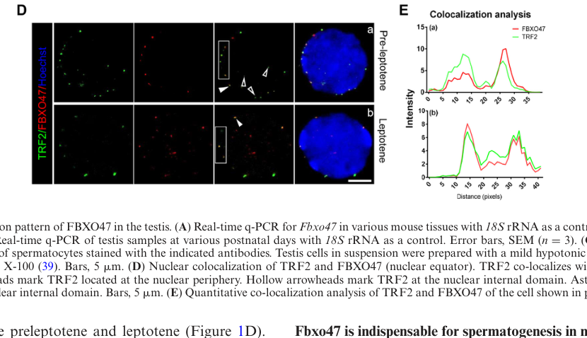

FBXO47 (F-box only protein 47) is a 452-residue F-box-domain-containing protein (F-box at residues 41-91, plus an FBXO47-specific armadillo-like region) belonging to the FBXO ("F-box only") subfamily of F-box proteins, which canonically act as substrate-recognition receptors that, together with SKP1, CUL1 and RBX1, assemble SCF (SKP1-cullin-F-box) E3 ubiquitin ligase complexes. FBXO47 is strongly enriched in testis (HPA testis-enriched; expressed in male germline cells) and was originally cloned from a testis library. Functional studies in mouse have established FBXO47 as a germ-cell protein essential for meiotic prophase I in spermatocytes: Fbxo47-null males are infertile with spermatocytes arresting around late zygotene/pachytene, showing incomplete homologous synapsis, persistent autosomal gamma-H2AX, and failure to form XY bodies. Mechanistically, FBXO47 acts at meiotic chromosome subcompartments through SKP1-associated regulation: it localizes to the nuclear periphery and co-localizes with the shelterin component TRF2, where it promotes telomere-inner nuclear membrane attachment by stabilizing TRF2 (impairing TRF2 ubiquitination) during the bouquet stage; FBXO47 also interacts with SKP1 and the axis protein HORMAD1, contributing to HORMAD1 turnover and meiotic double-strand-break/ recombination homeostasis, and has been proposed to act in a centromeric SCF module that preserves centromeric SKP1 to support centromere pairing. Notably, several of its documented activities involve preventing rather than promoting substrate degradation (TRF2, SKP1), so its in vivo role may diverge from a classical SCF substrate receptor that drives degradation. A curated SCF E3 ligase complex variant containing FBXO47 has been recorded (ComplexPortal CPX-8006). FBXO47 maps to 17q12; human genetics associates the locus with azoospermia, and a missense variant has been reported as a candidate in autosomal recessive intellectual disability.
Definition: A meiotic-prophase-I biological process in which telomeres become tethered to and cluster at the inner nuclear membrane (the bouquet stage), facilitating homologous chromosome pairing and recombination. FBXO47's best-supported in vivo role is promoting this telomere-inner-nuclear-membrane attachment via stabilization of the shelterin protein TRF2; no existing FBXO47 annotation captures this specific telomere-INM/bouquet process. Proposed label and definition only; no GO ID invented.
| GO Term | Evidence | Action | Reason |
|---|---|---|---|
|
GO:0019005
SCF ubiquitin ligase complex
|
NAS
PMID:34445249 The SCF Complex Is Essential to Maintain Genome and Chromoso... |
KEEP AS NON CORE |
Summary: ComplexPortal NAS assertion that FBXO47 is part of an SCF E3 ubiquitin ligase complex, consistent with its F-box domain and the curated FBXO47-variant SCF complex (CPX-8006). FBXO47's essential, experimentally established biology is in meiotic prophase, not canonical SCF catalysis, so this is retained as non-core.
Reason: FBXO47 has an F-box domain and a curated SCF-complex variant (CPX-8006), and UniProt states it is part of an SCF complex, but this is inferred by similarity (ECO:0000250) and asserted (NAS) from a general SCF review (PMID:34445249) rather than demonstrated for FBXO47 specifically. Falcon-sourced primary literature (Hua 2019; Ma 2024) shows FBXO47 physically interacts with the SCF core component SKP1 in germ cells, which biochemically supports SCF-machinery association; however the in vivo essential function is in meiotic prophase (telomere-INM integration via TRF2 stabilization, centromere pairing) and several activities prevent rather than promote substrate degradation, so SCF-complex membership is kept as a non-core annotation rather than promoted to a core function. This is consistent with the functional placement of FBXO47 as an F-box/SCF (CRL1) substrate-recognition module while keeping the meiotic biology central.
Supporting Evidence:
file:human/FBXO47/FBXO47-uniprot.txt
Part of a SCF (SKP1-cullin-F-box) protein ligase complex.
file:human/FBXO47/FBXO47-deep-research-falcon.md
Evidence from co-immunoprecipitation indicates FBXO47 **interacts with SKP1**, supporting a model in which FBXO47 can act as an F-box/SCF-associated factor
|
|
GO:0031146
SCF-dependent proteasomal ubiquitin-dependent protein catabolic process
|
NAS
PMID:34445249 The SCF Complex Is Essential to Maintain Genome and Chromoso... |
UNDECIDED |
Summary: ComplexPortal NAS assertion that FBXO47 participates in SCF-dependent proteasomal protein degradation. This is inferred from F-box family membership and a general SCF review, and the UniProt FUNCTION itself is only a "Probably" statement by similarity; the experimentally documented FBXO47 function is in meiosis and may not proceed via canonical SCF-dependent degradation in vivo.
Reason: The annotation rests on family-level inference (UniProt FUNCTION is a "Probably recognizes... promotes their ubiquitination and degradation" ECO:0000250 statement) and an NAS citation to a general SCF review (PMID:34445249) that does not characterize FBXO47. Falcon-sourced primary literature complicates rather than confirms this term: while one study reports FBXO47 can target HORMAD1 for polyubiquitination and degradation (supporting some SCF-dependent catabolic activity), the best-characterized FBXO47 activities are protective/stabilizing (impairing ubiquitination of TRF2 and of SKP1), i.e. opposing degradation. The functionally validated in vivo role of FBXO47 (mouse knockouts) is in meiotic prophase / telomere-INM integration / centromere pairing; whether FBXO47's essential function proceeds via canonical SCF-dependent proteasomal degradation of substrates in vivo is not established. Marked UNDECIDED rather than ACCEPT/REMOVE because the underlying biochemical claim cannot be verified from the available evidence and the gene's documented activities point in both directions.
Supporting Evidence:
file:human/FBXO47/FBXO47-uniprot.txt
Probably recognizes and binds to some phosphorylated proteins and promotes their ubiquitination and degradation.
file:human/FBXO47/FBXO47-deep-research-falcon.md
FBXO47 interacts with SKP1 and HORMAD1 and targets HORMAD1 for polyubiquitination and degradation in HEK293T cells
|
Q: Does FBXO47 assemble a canonical SCF (SKP1-CUL1-RBX1) E3 ligase complex in germ cells and ubiquitinate substrates for proteasomal degradation, or does its essential meiotic function (telomere-INM integration, centromere pairing) operate via non-degradative, stabilizing activities (e.g. shielding TRF2 and SKP1 from ubiquitination)?
Q: Are the telomere-centric (TRF2/bouquet) and centromere-centric (SKP1/centromere pairing) models of FBXO47 reconcilable as a single SKP1-dependent meiotic surveillance activity, or do they reflect distinct chromosome-subcompartment functions and/or antibody/knockout-method artefacts?
Q: Is the human FBXO47 azoospermia association causal, and does the reported intellectual-disability missense variant (R182G) affect FBXO47 function or reflect linkage at 17q12?
Experiment: Generate F-box-deletion or F-box point-mutant FBXO47 alleles (disrupting SKP1 binding) in a germ-cell or mouse model and assess whether SKP1/SCF association is required for telomere-INM integration, TRF2 stabilization, and centromere pairing, distinguishing degradative SCF function from non-degradative stabilizing roles.
Experiment: Perform affinity-purification mass spectrometry of FBXO47 from testis across meiotic stages to define its complex composition (SKP1/CUL1/RBX1 versus shelterin/axis partners such as TRF2 and HORMAD1) and candidate ubiquitination substrates, followed by in vitro reconstitution and ubiquitination/deubiquitination assays to test whether FBXO47 promotes or restrains substrate ubiquitination.
Experiment: Use super-resolution and electron microscopy of Fbxo47 wild-type versus knockout spermatocytes to map FBXO47 localization at telomere-INM versus centromeric/axis sites and directly test the telomere-centric versus centromere-centric models.
The research report should be a detailed narrative explaining the function, biological processes, and localization of the gene product. Citations should be given for all claims.
You should prioritize authoritative reviews and primary scientific literature when conducting research. You can supplement
this with annotations you find in gene/protein databases, but these can be outdated or inaccurate.
We are specifically interested in the primary function of the gene - for enzymes, what reaction is catalyzed, and what is the substrate specificity? For transporters, what is the substrate? For structural proteins or adapters, what is the broader structural role? For signaling molecules, what is the role in the pathway.
We are interested in where in or outside the cell the gene product carries out its function.
We are also interested in the signaling or biochemical pathways in which the gene functions. We are less interested in broad pleiotropic effects, except where these elucidate the precise role.
Include evidence where possible. We are interested in both experimental evidence as well as inference from structure, evolution, or bioinformatic analysis. Precise studies should be prioritized over high-throughput, where available.
The target gene/protein in this report is human FBXO47 (F‑box only protein 47), matching UniProt accession Q5MNV8 and the expected functional class of an F‑box protein, i.e., a substrate-recognition factor that typically binds SKP1 within a SCF (SKP1–CUL1–F‑box) E3 ubiquitin ligase. Evidence discussed below consistently treats FBXO47 as an F‑box protein that physically interacts with SKP1 and regulates key meiotic proteins (TRF2; HORMAD1), aligning with the UniProt-provided identity and domain expectations (F-box-like domain). (hua2019fbxo47regulatestelomereinner pages 10-11, ma2024fbxo47regulatescentromere pages 8-9)
F‑box proteins are generally understood as substrate adaptors of SCF-type E3 ubiquitin ligase complexes, enabling selective ubiquitination that can lead to proteasomal degradation or other ubiquitin-dependent regulation of target proteins. In the FBXO47 context, primary studies explicitly show FBXO47–SKP1 interaction, consistent with SCF membership, and functional ubiquitination-related assays affecting meiotic proteins (TRF2; HORMAD1; SKP1) (hua2019fbxo47regulatestelomereinner pages 10-11, ma2024fbxo47regulatescentromere pages 8-9).
During meiotic prophase I, telomeres tether to the inner nuclear membrane (INM) and cluster (bouquet stage), helping homolog pairing and recombination. A central telomere complex is shelterin, including TRF1/TRF2. In a key mechanistic study, FBXO47 is positioned as a regulator of telomere–INM integration by influencing shelterin component stability—particularly TRF2 (hua2019fbxo47regulatestelomereinner pages 8-10, hua2019fbxo47regulatestelomereinner pages 10-11).
Beyond telomeres, meiotic chromosome behavior depends on centromere pairing and synaptonemal complex organization. A 2024 study proposes FBXO47 functions in a centromeric SCF module that maintains centromeric SCF components (notably SKP1) to promote centromere pairing and pachytene progression (ma2024fbxo47regulatescentromere pages 1-2, ma2024fbxo47regulatescentromere pages 8-9).
Evidence from co-immunoprecipitation indicates FBXO47 interacts with SKP1, supporting a model in which FBXO47 can act as an F-box/SCF-associated factor (hua2019fbxo47regulatestelomereinner pages 10-11). A more recent mechanistic proposal highlights FBXO47–SKP1 binding and argues FBXO47 helps preserve SKP1 by modulating its ubiquitination (ma2024fbxo47regulatescentromere pages 8-9).
A central mechanistic claim is that FBXO47 interacts with TRF1 and TRF2 and preferentially stabilizes TRF2:
* Co-IP experiments support FBXO47 interaction with TRF1/TRF2 (hua2019fbxo47regulatestelomereinner pages 11-11).
* Ubiquitination assays indicate FBXO47 overexpression can impair TRF2 ubiquitination (without similarly affecting TRF1), consistent with TRF2 stabilization (hua2019fbxo47regulatestelomereinner pages 11-11).
* Quantitative immunofluorescence intensity measurements reported TRF1 signal intensity was not reduced in knockouts (8.769 ± 0.351 vs 9.786 ± 0.6768), while TRF2 intensity decreased in Fbxo47−/− spermatocytes across stages (e.g., zygotene 38.046 ± 7.281 vs 18.953 ± 13.110) (hua2019fbxo47regulatestelomereinner pages 10-11).
Interpretation: in the meiotic context, FBXO47 may function less like a “classic” SCF adaptor that triggers target degradation, and more like a regulator that prevents inappropriate ubiquitination/turnover of TRF2 during meiotic telomere–INM integration (hua2019fbxo47regulatestelomereinner pages 11-11, hua2019fbxo47regulatestelomereinner pages 10-11).
A 2022 Nucleic Acids Research study (focused on SCF core factor SKP1 in meiosis) reports a mechanistic link wherein FBXO47 interacts with SKP1 and HORMAD1 and targets HORMAD1 for polyubiquitination and degradation in HEK293T cells, supporting a model where SCF helps restrain hyperactive DSB formation by modulating HORMAD1 abundance and upstream DSB machinery recruitment (hua2019fbxo47regulatestelomereinner pages 4-4). In 2024, a centromere-focused study further interprets that FBXO47 “probably regulates HORMAD1” (building on prior work) to ensure proper HORMAD1 unloading from synapsed regions (ma2024fbxo47regulatescentromere pages 8-9).
Ma et al. (Communications Biology, published online 2024-09; https://doi.org/10.1038/s42003-024-06782-6) propose FBXO47 is a component of a centromeric SCF E3 ligase and that FBXO47 can reduce SKP1 ubiquitination, helping preserve SKP1 levels at centromeres/chromosome axes. They report a quantitative metric: average SKP1 centromeric-end/counterpart signal ratio = 3.62, and multiple significant comparisons in figures (p = 0.0003, p = 0.0016, p < 0.0001) (ma2024fbxo47regulatescentromere pages 8-9).
A mechanistic study (Nucleic Acids Research, 2019-11; https://doi.org/10.1093/nar/gkz992) positions FBXO47 as required for proper telomere–INM integration: FBXO47 localizes to the nuclear periphery in early prophase and co-localizes with TRF2, and loss of Fbxo47 leads to increased detached/internal telomeres measured as internal TRF1 foci (n > 30 cells/genotype; ***P < 0.001) (hua2019fbxo47regulatestelomereinner pages 8-10, hua2019fbxo47regulatestelomereinner media f09c33b9, hua2019fbxo47regulatestelomereinner media c8432221).
These findings support a pathway-level role: FBXO47 → TRF2 stabilization → telomere attachment/bouquet progression → synapsis and recombination fidelity (hua2019fbxo47regulatestelomereinner pages 8-10, hua2019fbxo47regulatestelomereinner pages 10-11).
The SCF ubiquitin ligase system is implicated in restraining excessive DSB formation and coordinating recombination; a key mechanistic component is HORMAD1 accumulation and its influence on the pre-DSB complex. Evidence supports FBXO47 as one meiotic F-box protein that can link SCF to HORMAD1 ubiquitin-dependent turnover (in cell assays), providing a plausible pathway connection: FBXO47–SCF → HORMAD1 regulation → DSB homeostasis and synapsis initiation (hua2019fbxo47regulatestelomereinner pages 4-4).
Ma et al. (2024-09) propose that a centromeric SCF including FBXO47 promotes centromere pairing and synapsis integrity; knockout phenotypes described include leptotene/zygotene delay, pachytene-like arrest, crossover failure, and altered HORMAD1 behavior at centromeric ends (ma2024fbxo47regulatescentromere pages 8-9, ma2024fbxo47regulatescentromere pages 1-2).
FBXO47 was reported to form foci on the nuclear surface during early meiotic prophase I and co-localize with TRF2 at the nuclear periphery, consistent with a role at telomeres as they attach to the INM (hua2019fbxo47regulatestelomereinner pages 5-6, hua2019fbxo47regulatestelomereinner media f09c33b9).
A 2024 Communications Biology paper emphasizes centromeric localization of FBXO47 and interprets FBXO47 as part of a centromeric SCF module that affects centromere pairing and synapsis integrity (ma2024fbxo47regulatescentromere pages 1-2, ma2024fbxo47regulatescentromere pages 8-9).
The 2024 centromere-focused paper explicitly notes conflicting prior reports emphasizing telomere roles and suggests technical factors (e.g., antibody quality; KO methods) may contribute to discrepancies (ma2024fbxo47regulatescentromere pages 1-2). A 2024 review focused on spermatogenesis largely frames FBXO47 as telomere/NE-associated (xuan2024theemergingand pages 5-7, xuan2024theemergingand pages 7-8). Overall, the most defensible current view is that FBXO47 is a meiotic nuclear protein that may function at multiple chromosome subcompartments (telomere/NE interface and/or centromeres) through SCF-related regulation (ma2024fbxo47regulatescentromere pages 8-9, xuan2024theemergingand pages 7-8).
The major 2024 primary advance is the proposal and supporting evidence that FBXO47 participates in a centromeric SCF E3 ligase in spermatocytes, binds SKP1, and reduces SKP1 ubiquitination, maintaining centromeric SKP1 abundance and centromere pairing (Communications Biology; 2024-09; https://doi.org/10.1038/s42003-024-06782-6) (ma2024fbxo47regulatescentromere pages 8-9, ma2024fbxo47regulatescentromere pages 1-2).
A 2024 review in Cell Regeneration (published 2024-06; https://doi.org/10.1186/s13619-024-00196-9) summarizes FBXO47 as a meiotic F-box protein involved in telomere–NE integration; the review interprets knockout phenotypes (late-zygotene arrest, incomplete synapsis, impaired DSB repair signals such as autosomal γH2AX retention, lack of XY bodies) as evidence FBXO47 is necessary for telomere-mediated meiotic progression and male fertility (xuan2024theemergingand pages 7-8).
Open Targets reports an association between human FBXO47 (ENSG00000204952) and azoospermia (evidence score ~0.105; 5 evidence items) (OpenTargets Search: -FBXO47). While the strongest mechanistic evidence is from mouse genetics and cell assays, the disease association is biologically plausible given the meiosis-specific roles described in mammalian spermatocytes (hua2019fbxo47regulatestelomereinner pages 8-10, ma2024fbxo47regulatescentromere pages 8-9).
A Scientific Reports analysis of azoospermia/male infertility transcriptomic datasets notes that azoospermia affects ~1% of all men and is prevalent in up to 10–15% of infertile males, highlighting clinical relevance and diagnostic need (published 2022-02; https://doi.org/10.1038/s41598-022-06476-1) (omolaoye2022usingpubliclyavailable pages 8-9).
A 2022 paper mining public testis transcriptomic datasets discusses the limited literature tying F-box proteins to male infertility and largely cites model-organism mechanisms (including FBXO47’s role with TRF1/2 and bouquet progression) rather than presenting FBXO47 as a validated human biomarker with effect sizes in patient cohorts (omolaoye2022usingpubliclyavailable pages 8-9). Therefore, FBXO47 is best viewed currently as a candidate gene for mechanistic panels and sequencing-based etiologic workups, rather than a stand-alone clinically validated biomarker in routine diagnostics (OpenTargets Search: -FBXO47, omolaoye2022usingpubliclyavailable pages 8-9).
Given FBXO47’s essential role in meiosis and its highly germline-enriched functional framing, it is conceptually relevant to non-hormonal male contraception and infertility therapeutics; however, no FBXO47-targeted interventions or trials were identified in the clinical-trials search performed here, indicating no direct clinical implementation at present (OpenTargets Search: -FBXO47).
Key figure panels from Hua et al. (2019) show (i) FBXO47 colocalization with TRF2 at the nuclear periphery and (ii) quantification of detached/internal telomeres using internal TRF1 foci counts and bar graphs with n > 30 and P < 0.001 (hua2019fbxo47regulatestelomereinner media f09c33b9, hua2019fbxo47regulatestelomereinner media c8432221).
Most supported primary function: FBXO47 is a meiosis-associated F‑box protein that interacts with SCF machinery (via SKP1) and regulates key meiotic chromosomal proteins to ensure proper meiotic prophase progression. The strongest mechanistic evidence links FBXO47 to telomere–INM integration via TRF2 stabilization and to broader SCF-mediated control of meiotic chromosome axis factors (HORMAD1) influencing recombination/DSB homeostasis (hua2019fbxo47regulatestelomereinner pages 10-11, hua2019fbxo47regulatestelomereinner pages 4-4).
Localization: Evidence supports action at the nuclear periphery/telomere–NE interface during early meiotic prophase (hua2019fbxo47regulatestelomereinner pages 5-6, hua2019fbxo47regulatestelomereinner media f09c33b9). Newer 2024 work argues for an additional or alternative centromeric SCF role influencing centromere pairing and SKP1 stability (ma2024fbxo47regulatescentromere pages 8-9, ma2024fbxo47regulatescentromere pages 1-2).
Human relevance: Direct human functional studies remain limited in the retrieved corpus, but aggregated disease-genetics resources associate FBXO47 with azoospermia, consistent with compelling meiotic phenotypes in mammalian systems (OpenTargets Search: -FBXO47, xuan2024theemergingand pages 7-8).
| Evidence type | Biological context (meiosis stage/cell type) | Molecular function claim | Key partners/substrates | Subcellular localization | Experimental approach | Quantitative/statistical notes | Species (mouse/human cells) | Citation (include DOI URL + year) |
|---|---|---|---|---|---|---|---|---|
| Primary | Early meiotic prophase I spermatocytes; bouquet/telomere attachment stage | FBXO47 is an F-box/SCF-associated factor required for telomere-inner nuclear envelope integration and stabilizes TRF2 rather than promoting its degradation | SKP1; TRF1; TRF2 | Nuclear periphery; telomere-associated sites at the inner nuclear membrane | CRISPR FLAG knock-in, co-immunoprecipitation, HEK293T co-expression, ubiquitination assays, cycloheximide chase, IF on chromosome spreads, EM/FIB-SEM | n > 30 cells/genotype for internal TRF1 foci; P < 0.001; TRF1 intensity not decreased (8.769 ± 0.351 vs 9.786 ± 0.6768), while TRF2 intensity decreased in knockout spermatocytes (leptotene 23.873 ± 5.414 vs 19.660 ± 4.207; zygotene 38.046 ± 7.281 vs 18.953 ± 13.110) | Mouse testes/spermatocytes; human HEK293T cells | Hua et al., Nucleic Acids Research, 2019, https://doi.org/10.1093/nar/gkz992 (hua2019fbxo47regulatestelomereinner pages 4-4, hua2019fbxo47regulatestelomereinner pages 8-10, hua2019fbxo47regulatestelomereinner pages 11-11, hua2019fbxo47regulatestelomereinner pages 5-6, hua2019fbxo47regulatestelomereinner pages 4-5, hua2019fbxo47regulatestelomereinner pages 10-11, hua2019fbxo47regulatestelomereinner media f09c33b9) |
| Primary | Early meiotic recombination in spermatocytes | FBXO47 acts as a meiosis-specific F-box protein interacting with SKP1 and HORMAD1 and can target HORMAD1 for polyubiquitination/degradation, linking SCF activity to control of meiotic DSB homeostasis | SKP1; HORMAD1 | Meiotic chromosomal axis context inferred from HORMAD1 biology; exact FBXO47 localization not the main focus in extracted evidence | Mouse meiotic genetics plus HEK293T interaction/ubiquitination assays | No specific numeric effect sizes extracted here for FBXO47 itself; study supports mechanism that SCF restrains hyperactive DSB formation through HORMAD1 turnover | Mouse germ cells; human HEK293T cells | Guan et al., Nucleic Acids Research, 2022, https://doi.org/10.1093/nar/gkac304 (hua2019fbxo47regulatestelomereinner pages 10-11) |
| Primary | Zygotene-to-pachytene spermatocytes; centromere pairing and pachynema progression | FBXO47 is proposed as a centromeric SCF E3 ligase component that stabilizes SKP1 by suppressing its ubiquitination and thereby promotes centromere pairing, synapsis integrity, and meiotic progression | SKP1; HORMAD1 (regulatory connection proposed) | Centromeres; chromosome axes; study also notes effects on telomere-NE attachment | Co-IP in HEK293T, ubiquitination assays, chromosome spreads, IF localization across meiotic stages | Reported centromeric-end/counterpart SKP1 signal ratio 3.62; figure-level significance includes p = 0.0003, p = 0.0016, p < 0.0001; knockout causes leptotene/zygotene delay, pachytene-like arrest, crossover failure | Mouse spermatocytes; human HEK293T cells | Ma et al., Communications Biology, 2024, https://doi.org/10.1038/s42003-024-06782-6 (ma2024fbxo47regulatescentromere pages 1-2, ma2024fbxo47regulatescentromere pages 8-9) |
| Review | Spermatogenesis, especially meiotic prophase I in spermatocytes | Expert synthesis: FBXO47 is a meiotic F-box protein essential for telomere-NE integration, homologous chromosome synapsis, bouquet-stage progression, and male fertility; current literature supports a telomere-centric role, though newer work introduces centromere-focused models | TRF1; TRF2; broader SCF machinery | Nuclear surface/telomere-NE interface during meiosis | Narrative review of primary literature in mouse and comparative systems | Summarizes phenotypes such as reduced testis weight, abnormal spermatocyte-like cells, late-zygotene arrest, autosomal gamma-H2AX retention, and absence of XY bodies; no new original quantitative dataset | Review of mouse and other model-organism data | Xuan et al., Cell Regeneration, 2024, https://doi.org/10.1186/s13619-024-00196-9 (xuan2024theemergingand pages 5-7, xuan2024theemergingand pages 7-8) |
| Database | Human disease association landscape | Human FBXO47 is associated most strongly with azoospermia in Open Targets, consistent with meiosis/spermatogenesis biology; other weaker associations are present but less biologically specific | Disease association evidence linked to literature rather than direct substrate data | Not applicable | Integrated disease-target evidence aggregation | Open Targets evidence score for azoospermia association 0.1046948485 with 5 evidence items; additional lower-confidence associations include hypertension, hypothyroidism, facial pain, and partial chromosome Y deletion | Human | Open Targets Platform, FBXO47 target page, https://platform.opentargets.org/target/ENSG00000204952 (OpenTargets Search: -FBXO47) |
Table: This table summarizes the main functional annotation evidence for human FBXO47 by integrating primary mechanistic studies, a recent review, and a disease-association database. It highlights the current consensus and controversy around FBXO47's meiotic role, binding partners, localization, and links to male infertility.
References
(hua2019fbxo47regulatestelomereinner pages 10-11): Rong Hua, Huafang Wei, Chao Liu, Yue Zhang, Siyu Liu, Yueshuai Guo, Yiqiang Cui, Xin Zhang, Xuejiang Guo, Wei Li, and Mingxi Liu. Fbxo47 regulates telomere-inner nuclear envelope integration by stabilizing trf2 during meiosis. Nucleic Acids Research, 47:11755-11770, Nov 2019. URL: https://doi.org/10.1093/nar/gkz992, doi:10.1093/nar/gkz992. This article has 60 citations and is from a highest quality peer-reviewed journal.
(ma2024fbxo47regulatescentromere pages 8-9): Ani Ma, Yali Yang, Lianbao Cao, Lijun Chen, and Jian V. Zhang. Fbxo47 regulates centromere pairing as key component of centromeric scf e3 ligase in mouse spermatocytes. Communications Biology, Sep 2024. URL: https://doi.org/10.1038/s42003-024-06782-6, doi:10.1038/s42003-024-06782-6. This article has 7 citations and is from a peer-reviewed journal.
(hua2019fbxo47regulatestelomereinner pages 8-10): Rong Hua, Huafang Wei, Chao Liu, Yue Zhang, Siyu Liu, Yueshuai Guo, Yiqiang Cui, Xin Zhang, Xuejiang Guo, Wei Li, and Mingxi Liu. Fbxo47 regulates telomere-inner nuclear envelope integration by stabilizing trf2 during meiosis. Nucleic Acids Research, 47:11755-11770, Nov 2019. URL: https://doi.org/10.1093/nar/gkz992, doi:10.1093/nar/gkz992. This article has 60 citations and is from a highest quality peer-reviewed journal.
(ma2024fbxo47regulatescentromere pages 1-2): Ani Ma, Yali Yang, Lianbao Cao, Lijun Chen, and Jian V. Zhang. Fbxo47 regulates centromere pairing as key component of centromeric scf e3 ligase in mouse spermatocytes. Communications Biology, Sep 2024. URL: https://doi.org/10.1038/s42003-024-06782-6, doi:10.1038/s42003-024-06782-6. This article has 7 citations and is from a peer-reviewed journal.
(hua2019fbxo47regulatestelomereinner pages 11-11): Rong Hua, Huafang Wei, Chao Liu, Yue Zhang, Siyu Liu, Yueshuai Guo, Yiqiang Cui, Xin Zhang, Xuejiang Guo, Wei Li, and Mingxi Liu. Fbxo47 regulates telomere-inner nuclear envelope integration by stabilizing trf2 during meiosis. Nucleic Acids Research, 47:11755-11770, Nov 2019. URL: https://doi.org/10.1093/nar/gkz992, doi:10.1093/nar/gkz992. This article has 60 citations and is from a highest quality peer-reviewed journal.
(hua2019fbxo47regulatestelomereinner pages 4-4): Rong Hua, Huafang Wei, Chao Liu, Yue Zhang, Siyu Liu, Yueshuai Guo, Yiqiang Cui, Xin Zhang, Xuejiang Guo, Wei Li, and Mingxi Liu. Fbxo47 regulates telomere-inner nuclear envelope integration by stabilizing trf2 during meiosis. Nucleic Acids Research, 47:11755-11770, Nov 2019. URL: https://doi.org/10.1093/nar/gkz992, doi:10.1093/nar/gkz992. This article has 60 citations and is from a highest quality peer-reviewed journal.
(hua2019fbxo47regulatestelomereinner media f09c33b9): Rong Hua, Huafang Wei, Chao Liu, Yue Zhang, Siyu Liu, Yueshuai Guo, Yiqiang Cui, Xin Zhang, Xuejiang Guo, Wei Li, and Mingxi Liu. Fbxo47 regulates telomere-inner nuclear envelope integration by stabilizing trf2 during meiosis. Nucleic Acids Research, 47:11755-11770, Nov 2019. URL: https://doi.org/10.1093/nar/gkz992, doi:10.1093/nar/gkz992. This article has 60 citations and is from a highest quality peer-reviewed journal.
(hua2019fbxo47regulatestelomereinner media c8432221): Rong Hua, Huafang Wei, Chao Liu, Yue Zhang, Siyu Liu, Yueshuai Guo, Yiqiang Cui, Xin Zhang, Xuejiang Guo, Wei Li, and Mingxi Liu. Fbxo47 regulates telomere-inner nuclear envelope integration by stabilizing trf2 during meiosis. Nucleic Acids Research, 47:11755-11770, Nov 2019. URL: https://doi.org/10.1093/nar/gkz992, doi:10.1093/nar/gkz992. This article has 60 citations and is from a highest quality peer-reviewed journal.
(hua2019fbxo47regulatestelomereinner pages 5-6): Rong Hua, Huafang Wei, Chao Liu, Yue Zhang, Siyu Liu, Yueshuai Guo, Yiqiang Cui, Xin Zhang, Xuejiang Guo, Wei Li, and Mingxi Liu. Fbxo47 regulates telomere-inner nuclear envelope integration by stabilizing trf2 during meiosis. Nucleic Acids Research, 47:11755-11770, Nov 2019. URL: https://doi.org/10.1093/nar/gkz992, doi:10.1093/nar/gkz992. This article has 60 citations and is from a highest quality peer-reviewed journal.
(xuan2024theemergingand pages 5-7): Zhuang Xuan, Jun Ruan, Canquan Zhou, and Zhi-ming Li. The emerging and diverse roles of f-box proteins in spermatogenesis and male infertility. Cell Regeneration, Jun 2024. URL: https://doi.org/10.1186/s13619-024-00196-9, doi:10.1186/s13619-024-00196-9. This article has 5 citations.
(xuan2024theemergingand pages 7-8): Zhuang Xuan, Jun Ruan, Canquan Zhou, and Zhi-ming Li. The emerging and diverse roles of f-box proteins in spermatogenesis and male infertility. Cell Regeneration, Jun 2024. URL: https://doi.org/10.1186/s13619-024-00196-9, doi:10.1186/s13619-024-00196-9. This article has 5 citations.
(OpenTargets Search: -FBXO47): Open Targets Query (-FBXO47, 5 results). Buniello, A. et al. (2025). Open Targets Platform: facilitating therapeutic hypotheses building in drug discovery. Nucleic Acids Research.
(omolaoye2022usingpubliclyavailable pages 8-9): Temidayo S. Omolaoye, Mahmood Yaseen Hachim, and Stefan S. du Plessis. Using publicly available transcriptomic data to identify mechanistic and diagnostic biomarkers in azoospermia and overall male infertility. Scientific Reports, Feb 2022. URL: https://doi.org/10.1038/s41598-022-06476-1, doi:10.1038/s41598-022-06476-1. This article has 32 citations and is from a peer-reviewed journal.
(hua2019fbxo47regulatestelomereinner pages 4-5): Rong Hua, Huafang Wei, Chao Liu, Yue Zhang, Siyu Liu, Yueshuai Guo, Yiqiang Cui, Xin Zhang, Xuejiang Guo, Wei Li, and Mingxi Liu. Fbxo47 regulates telomere-inner nuclear envelope integration by stabilizing trf2 during meiosis. Nucleic Acids Research, 47:11755-11770, Nov 2019. URL: https://doi.org/10.1093/nar/gkz992, doi:10.1093/nar/gkz992. This article has 60 citations and is from a highest quality peer-reviewed journal.

UPS|E3 ubiquitin and UBL ligases|Cul1 substrate receptor|F-box|other ; PN-node mapping: F-box subtype/type = no_mapping; group = mapped, ok_for_propagation_to_go, GO:1990756; class = context_only/too_broad (GO:0061630).This file is generated from the current PROTEOSTASIS phase-1 dossier and local gene-review artifacts. Edit the source review, PN mapping, or dossier rather than this generated note when correcting the underlying curation.
id: Q5MNV8
gene_symbol: FBXO47
product_type: PROTEIN
status: COMPLETE
taxon:
id: NCBITaxon:9606
label: Homo sapiens
description: >-
FBXO47 (F-box only protein 47) is a 452-residue F-box-domain-containing
protein (F-box at residues 41-91, plus an FBXO47-specific armadillo-like region)
belonging to the FBXO ("F-box only") subfamily of F-box proteins, which
canonically act as substrate-recognition receptors that, together with SKP1,
CUL1 and RBX1, assemble SCF (SKP1-cullin-F-box) E3 ubiquitin ligase complexes.
FBXO47 is strongly enriched in testis (HPA testis-enriched; expressed in male
germline cells) and was originally cloned from a testis library. Functional
studies in mouse have established FBXO47 as a germ-cell protein essential for
meiotic prophase I in spermatocytes: Fbxo47-null males are infertile with
spermatocytes arresting around late zygotene/pachytene, showing incomplete
homologous synapsis, persistent autosomal gamma-H2AX, and failure to form XY
bodies. Mechanistically, FBXO47 acts at meiotic chromosome subcompartments
through SKP1-associated regulation: it localizes to the nuclear periphery and
co-localizes with the shelterin component TRF2, where it promotes telomere-inner
nuclear membrane attachment by stabilizing TRF2 (impairing TRF2 ubiquitination)
during the bouquet stage; FBXO47 also interacts with SKP1 and the axis protein
HORMAD1, contributing to HORMAD1 turnover and meiotic double-strand-break/
recombination homeostasis, and has been proposed to act in a centromeric SCF
module that preserves centromeric SKP1 to support centromere pairing. Notably,
several of its documented activities involve preventing rather than promoting
substrate degradation (TRF2, SKP1), so its in vivo role may diverge from a
classical SCF substrate receptor that drives degradation. A curated SCF E3
ligase complex variant containing FBXO47 has been recorded (ComplexPortal
CPX-8006). FBXO47 maps to 17q12; human genetics associates the locus with
azoospermia, and a missense variant has been reported as a candidate in
autosomal recessive intellectual disability.
existing_annotations:
- term:
id: GO:0019005
label: SCF ubiquitin ligase complex
evidence_type: NAS
original_reference_id: PMID:34445249
qualifier: part_of
review:
summary: ComplexPortal NAS assertion that FBXO47 is part of an SCF E3 ubiquitin ligase complex, consistent with its F-box domain and the curated FBXO47-variant SCF complex (CPX-8006). FBXO47's essential, experimentally established biology is in meiotic prophase, not canonical SCF catalysis, so this is retained as non-core.
action: KEEP_AS_NON_CORE
reason: FBXO47 has an F-box domain and a curated SCF-complex variant (CPX-8006), and UniProt states it is part of an SCF complex, but this is inferred by similarity (ECO:0000250) and asserted (NAS) from a general SCF review (PMID:34445249) rather than demonstrated for FBXO47 specifically. Falcon-sourced primary literature (Hua 2019; Ma 2024) shows FBXO47 physically interacts with the SCF core component SKP1 in germ cells, which biochemically supports SCF-machinery association; however the in vivo essential function is in meiotic prophase (telomere-INM integration via TRF2 stabilization, centromere pairing) and several activities prevent rather than promote substrate degradation, so SCF-complex membership is kept as a non-core annotation rather than promoted to a core function. This is consistent with the functional placement of FBXO47 as an F-box/SCF (CRL1) substrate-recognition module while keeping the meiotic biology central.
supported_by:
- reference_id: file:human/FBXO47/FBXO47-uniprot.txt
supporting_text: 'Part of a SCF (SKP1-cullin-F-box) protein ligase complex.'
- reference_id: file:human/FBXO47/FBXO47-deep-research-falcon.md
supporting_text: Evidence from co-immunoprecipitation indicates FBXO47 **interacts with SKP1**, supporting a model in which FBXO47 can act as an F-box/SCF-associated factor
- term:
id: GO:0031146
label: SCF-dependent proteasomal ubiquitin-dependent protein catabolic process
evidence_type: NAS
original_reference_id: PMID:34445249
qualifier: involved_in
review:
summary: ComplexPortal NAS assertion that FBXO47 participates in SCF-dependent proteasomal protein degradation. This is inferred from F-box family membership and a general SCF review, and the UniProt FUNCTION itself is only a "Probably" statement by similarity; the experimentally documented FBXO47 function is in meiosis and may not proceed via canonical SCF-dependent degradation in vivo.
action: UNDECIDED
reason: >-
The annotation rests on family-level inference (UniProt FUNCTION is a
"Probably recognizes... promotes their ubiquitination and degradation"
ECO:0000250 statement) and an NAS citation to a general SCF review
(PMID:34445249) that does not characterize FBXO47. Falcon-sourced primary
literature complicates rather than confirms this term: while one study
reports FBXO47 can target HORMAD1 for polyubiquitination and degradation
(supporting some SCF-dependent catabolic activity), the best-characterized
FBXO47 activities are protective/stabilizing (impairing ubiquitination of
TRF2 and of SKP1), i.e. opposing degradation. The functionally validated in
vivo role of FBXO47 (mouse knockouts) is in meiotic prophase / telomere-INM
integration / centromere pairing; whether FBXO47's essential function
proceeds via canonical SCF-dependent proteasomal degradation of substrates
in vivo is not established. Marked UNDECIDED rather than ACCEPT/REMOVE
because the underlying biochemical claim cannot be verified from the
available evidence and the gene's documented activities point in both
directions.
supported_by:
- reference_id: file:human/FBXO47/FBXO47-uniprot.txt
supporting_text: Probably recognizes and binds to some phosphorylated proteins and promotes their ubiquitination and degradation.
- reference_id: file:human/FBXO47/FBXO47-deep-research-falcon.md
supporting_text: FBXO47 interacts with SKP1 and HORMAD1 and targets HORMAD1 for polyubiquitination and degradation in HEK293T cells
references:
- id: PMID:34445249
title: The SCF Complex Is Essential to Maintain Genome and Chromosome Stability.
findings:
- statement: General review of the 69 SCF E3 ubiquitin ligase complexes, in which variable F-box proteins determine substrate specificity and target substrates for proteasomal degradation; does not specifically characterize FBXO47.
reference_section_type: ABSTRACT
reference_review:
relevance: LOW
correctness: LOW_QUALITY
review_notes: >-
PubMed-verified (Int J Mol Sci 2021;22(16):8544, PMC8395177); abstract-only
in cache (full_text_available: false). This is a general SCF-family review
and does not establish FBXO47-specific function. It is the NAS source used
by ComplexPortal for both FBXO47 SCF annotations, but it provides only
family-level support, not direct evidence for FBXO47 acting as a canonical
SCF substrate receptor.
- id: file:human/FBXO47/FBXO47-uniprot.txt
title: UniProt entry Q5MNV8 (FBX47_HUMAN), F-box only protein 47
findings:
- statement: UniProt FUNCTION and SUBUNIT for FBXO47 are inferred by similarity (ECO:0000250); FBXO47 is testis-enriched and contains an F-box domain (residues 41-91).
reference_section_type: OTHER
reference_review:
relevance: HIGH
correctness: VERIFIED
review_notes: >-
Source of the SCF complex membership and substrate-receptor function
statements, both flagged by UniProt as "by similarity" (ECO:0000250). Also
documents testis tissue specificity and the F-box domain, supporting the
germ-cell/meiotic context.
- id: file:human/FBXO47/FBXO47-deep-research-falcon.md
title: Falcon deep research report for human FBXO47
findings:
- statement: FBXO47 is a meiosis-associated F-box protein that interacts with the SCF core component SKP1 and regulates meiotic chromosomal proteins (TRF2, HORMAD1) during meiotic prophase I.
supporting_text: 'Most supported primary function: FBXO47 is a meiosis-associated F‑box protein that interacts with SCF machinery (via SKP1) and regulates key meiotic chromosomal proteins to ensure proper meiotic prophase progression.'
- statement: In the meiotic context FBXO47 stabilizes the shelterin protein TRF2 (impairing its ubiquitination) at the telomere-inner nuclear membrane interface, rather than promoting TRF2 degradation.
supporting_text: 'Ubiquitination assays indicate FBXO47 overexpression can **impair TRF2 ubiquitination** (without similarly affecting TRF1), consistent with **TRF2 stabilization**'
- statement: FBXO47 interacts with SKP1 and HORMAD1 and can target HORMAD1 for polyubiquitination/degradation, linking SCF activity to control of meiotic DSB homeostasis.
supporting_text: FBXO47 interacts with SKP1 and HORMAD1 and targets HORMAD1 for polyubiquitination and degradation in HEK293T cells
- statement: A 2024 model proposes FBXO47 acts in a centromeric SCF module that suppresses SKP1 ubiquitination to preserve centromeric SKP1 and promote centromere pairing and pachytene progression.
supporting_text: FBXO47 is a component of a **centromeric SCF E3 ligase** and that FBXO47 can **reduce SKP1 ubiquitination**, helping preserve SKP1 levels at centromeres/chromosome axes
reference_review:
relevance: HIGH
correctness: UNVERIFIED
review_notes: >-
Falcon synthesis of FBXO47 meiotic biology, anchored on Hua et al. 2019
(Nucleic Acids Research, doi:10.1093/nar/gkz992; telomere-INM/TRF2), Guan et
al. 2022 (NAR, doi:10.1093/nar/gkac304; SKP1/HORMAD1), and Ma et al. 2024
(Communications Biology, doi:10.1038/s42003-024-06782-6; centromeric SCF).
These are real, citable primary studies cross-consistent with the
UniProt/HPA testis-enriched, F-box framing, but Falcon cites author-year/DOIs
not PMIDs and the underlying papers are not in the local cache, so the
molecular claims are treated as leads (UNVERIFIED) rather than independently
verified here.
core_functions:
- description: >-
F-box-domain protein expressed in male germ cells that is essential for
meiotic prophase I. FBXO47 acts at meiotic chromosome subcompartments through
SKP1-associated regulation: it localizes to the nuclear periphery, co-localizes
with the shelterin protein TRF2, and promotes telomere-inner nuclear membrane
attachment (bouquet formation) by stabilizing TRF2 (impairing its
ubiquitination); it also engages SKP1 and the axis protein HORMAD1 and is
implicated in HORMAD1 turnover, homologous synapsis, and meiotic
double-strand-break/recombination homeostasis. FBXO47 carries the F-box motif
characteristic of SCF substrate-recognition receptors and is recorded as part
of a curated FBXO47-variant SCF E3 ligase complex, but several of its
documented activities prevent rather than promote substrate degradation, so
its essential meiotic role may be partly distinct from canonical SCF-mediated
proteasomal degradation; a direct in vivo SCF substrate-receptor catalytic
role for FBXO47 has not been firmly established.
molecular_function:
id: GO:1990756
label: ubiquitin-like ligase-substrate adaptor activity
directly_involved_in:
- id: GO:0007129
label: homologous chromosome pairing at meiosis
locations:
- id: GO:0000794
label: condensed nuclear chromosome
supported_by:
- reference_id: file:human/FBXO47/FBXO47-uniprot.txt
supporting_text: Probably recognizes and binds to some phosphorylated proteins and promotes their ubiquitination and degradation.
- reference_id: file:human/FBXO47/FBXO47-uniprot.txt
supporting_text: 'DOMAIN 41..91'
- reference_id: file:human/FBXO47/FBXO47-deep-research-falcon.md
supporting_text: 'Most supported primary function: FBXO47 is a meiosis-associated F‑box protein that interacts with SCF machinery (via SKP1) and regulates key meiotic chromosomal proteins to ensure proper meiotic prophase progression.'
proposed_new_terms:
- proposed_name: telomere attachment to nuclear envelope involved in meiotic telomere clustering (bouquet formation)
proposed_definition: >-
A meiotic-prophase-I biological process in which telomeres become tethered to
and cluster at the inner nuclear membrane (the bouquet stage), facilitating
homologous chromosome pairing and recombination. FBXO47's best-supported in
vivo role is promoting this telomere-inner-nuclear-membrane attachment via
stabilization of the shelterin protein TRF2; no existing FBXO47 annotation
captures this specific telomere-INM/bouquet process. Proposed label and
definition only; no GO ID invented.
suggested_questions:
- question: Does FBXO47 assemble a canonical SCF (SKP1-CUL1-RBX1) E3 ligase complex in germ cells and ubiquitinate substrates for proteasomal degradation, or does its essential meiotic function (telomere-INM integration, centromere pairing) operate via non-degradative, stabilizing activities (e.g. shielding TRF2 and SKP1 from ubiquitination)?
- question: Are the telomere-centric (TRF2/bouquet) and centromere-centric (SKP1/centromere pairing) models of FBXO47 reconcilable as a single SKP1-dependent meiotic surveillance activity, or do they reflect distinct chromosome-subcompartment functions and/or antibody/knockout-method artefacts?
- question: Is the human FBXO47 azoospermia association causal, and does the reported intellectual-disability missense variant (R182G) affect FBXO47 function or reflect linkage at 17q12?
suggested_experiments:
- description: Generate F-box-deletion or F-box point-mutant FBXO47 alleles (disrupting SKP1 binding) in a germ-cell or mouse model and assess whether SKP1/SCF association is required for telomere-INM integration, TRF2 stabilization, and centromere pairing, distinguishing degradative SCF function from non-degradative stabilizing roles.
- description: Perform affinity-purification mass spectrometry of FBXO47 from testis across meiotic stages to define its complex composition (SKP1/CUL1/RBX1 versus shelterin/axis partners such as TRF2 and HORMAD1) and candidate ubiquitination substrates, followed by in vitro reconstitution and ubiquitination/deubiquitination assays to test whether FBXO47 promotes or restrains substrate ubiquitination.
- description: Use super-resolution and electron microscopy of Fbxo47 wild-type versus knockout spermatocytes to map FBXO47 localization at telomere-INM versus centromeric/axis sites and directly test the telomere-centric versus centromere-centric models.
{kind=link}